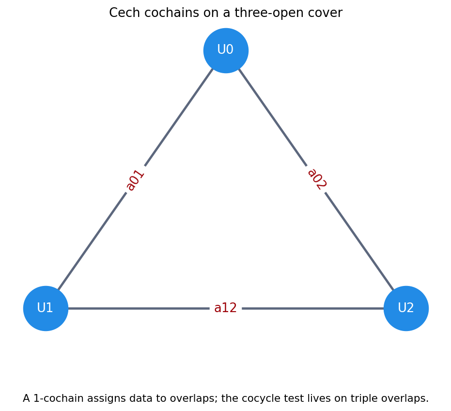
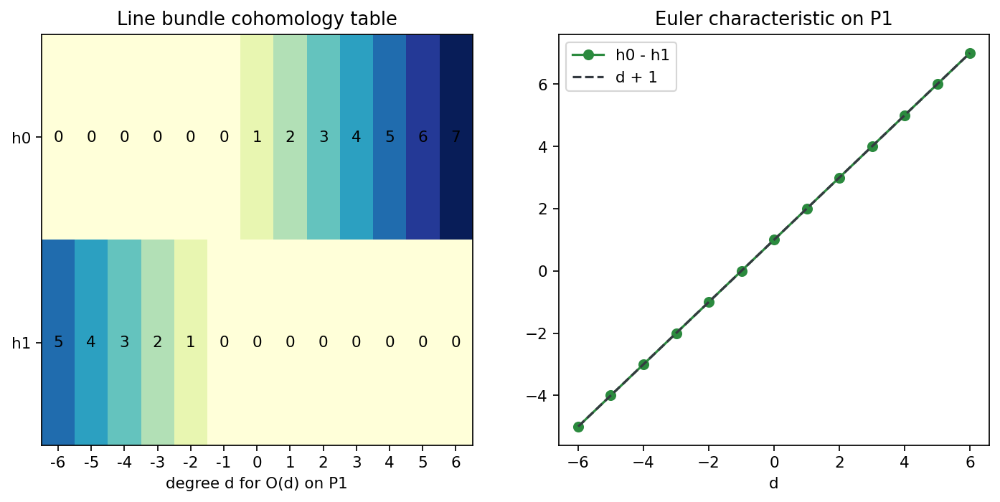
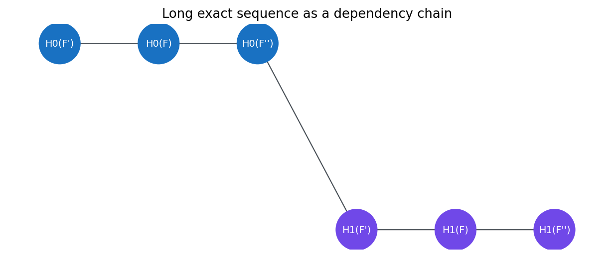

A chapter map from local gluing problems to computable invariants for projective schemes and families.

A 1-cochain assigns data to pairwise overlaps; the cocycle test reads the triple overlap.

The CSV records \(h^0-h^1=d+1\) for sample degrees \(d=-5,\ldots,5\).

The connecting homomorphism is the hinge that moves information from \(H^0\) to \(H^1\).
Turn local gluing into a complex and inspect the residual.
Use projective-space formulas and Euler characteristics as anchors.
Propagate known groups and respect the connecting homomorphism.
Expect upper jumps, then ask whether base change is exact enough.